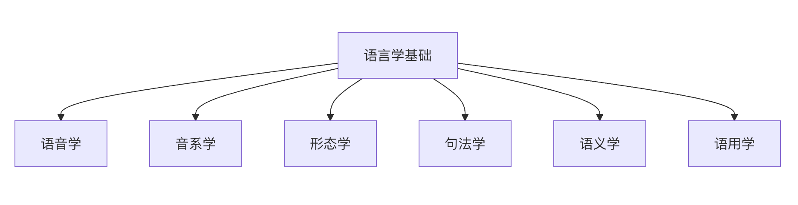

言語学基礎
自然言語処理（NLP）は人工知能の重要な一分野であり、その中核はコンピュータに人間の言語を理解・解釈・生成させることです。NLPを習得するには、まず人間の言語の働きを支える基本原理を理解する必要があります。これが言語学基礎です。
言語学基礎はNLPに理論的枠組みと分析ツールを提供します。主に以下の重要な側面を含みます：
- 音声学（Phonetics）：言語の音声システムを研究する
- 音韻論（Phonology）：音がどのように組み合わさって意味のある言語単位を形成するかを研究する
- 形態論（Morphology）：語の内部構造を研究する
- 統語論（Syntax）：文の構造を研究する
- 意味論（Semantics）：言語の意味を研究する
- 語用論（Pragmatics）：文脈における言語の使用を研究する

音声学と音韻論（Phonetics & Phonology）
音声学（Phonetics）
音声学は音声の物理的特性と生成メカニズムを研究し、音声の音響的・生理的特徴に注目します。
発音器官と発音方法
- 発音器官：
- 肺：気流を提供する
- 喉頭：声帯の振動により有声音を生成する
- 口腔：舌、歯、唇が気流を調節する
- 鼻腔：鼻音を生成する
子音の分類
発音方法と調音位置によって分類します：
-
発音方法：
- 破裂音：/p/, /b/, /t/, /d/, /k/, /g/
- 摩擦音：/f/, /v/, /s/, /z/
- 破擦音：/ts/, /tʃ/
- 鼻音：/m/, /n/, /ŋ/
- 側音：/l/
- ふるえ音：/r/
-
調音位置：
- 両唇音：/p/, /b/, /m/
- 唇歯音：/f/, /v/
- 舌尖音：/t/, /d/, /n/
- 軟口蓋音：/k/, /g/, /ŋ/
母音の分類
舌位と唇の形によって分類します：
- 舌の高さ：高母音/i/, /u/、中母音/e/, /o/、低母音/a/
- 舌の前後前舌母音/i/, /e/、中舌母音/a/、後舌母音/u/, /o/
- 唇の形：円唇母音/u/, /o/、非円唇母音/i/, /e/, /a/
中国語の音声的特徴
- 声調言語：声調が意味を区別する役割を持つ
- 普通話の4つの基本声調：陰平、陽平、上声、去声
- 例：妈(mā) 麻(má) 马(mǎ) 骂(mà)
- 音節構造：声母＋韻母の構造
- 声母：21の基本声母
- 韻母：39の基本韻母
音韻論（Phonology）
音韻論は音声システムの構造と規則を研究し、特定の言語における音声の機能に注目します。
音素（Phoneme）
- 意味を区別する機能を持つ最小の音声単位
- 例：英語では/p/と/b/は異なる音素である（pit vs bit）
- 中国語では声調は音素の構成要素である
異音（Allophone）
- 同じ音素が異なる環境で現れる音声的実現
- 例：英語の/p/は位置によって有気の程度が異なる
音韻規則
- 特定の環境における音声の変化規則を記述する
- 例：中国語の「一」の変調規則
- 英語の複数形の音声変化：cats /s/, dogs /z/, horses /ɪz/
NLPへの応用
- 音声認識：音声信号をテキストに変換する
- 音声合成：テキストを音声に変換する
- 音字変換：ピンインから漢字への変換
- 韻律分析：詩歌の韻律の計算的分析
形態論（Morphology）
形態論は語の内部構造と造語の規則を研究し、語彙レベルの分析の基礎となります。
基本概念
形態素（Morpheme）
- 言語において意味を持つ最小の文法単位
- 自由形態素：独立して使用できる形態素、例：「书」、「run」
- 拘束形態素：他の形態素に付着する必要があるもの、例：接頭辞、接尾辞
語根、接辞と語幹
- 語根（Root）：語の核心的な意味を担うもの
- 例：「unhappiness」において「happy」が語根である
- 接辞（Affix）：
- 接頭辞（Prefix）：un-, re-, pre-
- 接尾辞（Suffix）：-ness, -tion, -ly
- 接中辞（Infix）：まれであり、例：タガログ語
- 語幹（Stem）：屈折接辞を取り除いた後の形式
造語法
派生（Derivation）
- 派生接辞を追加することで品詞や語義を変える
- 例：
- happy → unhappy（否定接頭辞を追加）
- happy → happiness（名詞化接尾辞）
- teach → teacher（行為者接尾辞）
複合（Compounding）
- 2つ以上の語根を結合して新しい語を作る
- 英語の例：
- blackboard（black + board）
- laptop（lap + top）
- 中国語の例：
- 电脑（电＋脑）
- 手机（手＋机）
屈折（Inflection）
- 語の文法形式を変えるが基本的な語義は変えない
- 英語の動詞の活用：walk, walks, walked, walking
- 名詞の複数形：book → books, child → children
- 中国語の屈折変化は比較的少ない
中国語の形態論的特徴
語の概念
- 中国語の語の境界は比較的曖昧である
- 字、語、句の境界は英語ほど明確ではない
- 例：「研究生」は一つの語とも考えられるが、「研究」+「生」と分析することもできる
造語法
-
複合が中心：
- 修飾構造：汽車（火＋車）
- 動賓構造：運転手（運転＋手）
- 主述構造：地震（地＋震）
- 並列構造：朋友（朋＋友）
-
重ね型の造語：
- 動詞の重ね型：看看、走走
- 形容詞の重ね型：红红的、慢慢地
- 名詞の重ね型：人人、事事
品詞の転用
- 同じ字や語が異なる品詞として機能することができる
- 例：「水」は名詞（喝水）にも動詞（水稻田）にもなり得る
NLPへの応用
語幹抽出（Stemming）
- 語彙を語幹形式に還元する
- Porterアルゴリズム：「running」、「runs」、「ran」をすべて「run」に還元する
見出し語化（Lemmatization）
- 語彙を辞書形式（見出し語）に還元する
- 品詞情報を考慮するため、より正確である
中国語の分かち書き
- 中国語は語の間にスペースによる区切りがないため、分かち書き処理が必要である
- 辞書ベース、統計、またはニューラルネットワークによる方法
品詞タグ付け
- 各語の文法カテゴリーを決定する
- 構文解析のための基礎情報を提供する
統語論（Syntax）
統語論は文の構造と組織の規則を研究するものであり、言語の文法を理解する上での核心である。
基本概念
句構造
- 名詞句（NP）：名詞を中心とする句
- 例：那本有趣的书（あの面白い本）
- 動詞句（VP）：動詞を中心とする句
- 例：快速地跑步（速く走る）
- 前置詞句（PP）：前置詞を中心とする句
- 例：在桌子上（机の上に）
- 形容詞句（AP）：形容詞を中心とする句
- 例：非常美丽（とても美しい）
文の成分
- 主語（Subject）：動作の主体
- 述語（Predicate）：主語の動作または状態を述べる
- 目的語（Object）：動作の受け手
- 連体修飾語（Attributive）：名詞を修飾する成分
- 連用修飾語（Adverbial）：動詞、形容詞を修飾する成分
- 補語（Complement）：補足説明をする成分
統語分析の方法
句構造文法（Phrase Structure Grammar）
- 書き換え規則を用いて文構造を記述する
- 例：
S → NP VP NP → Det N VP → V NP Det → the, a, an N → cat, dog, book V → chase, read
依存文法（Dependency Grammar）
- 語と語の間の依存関係を核心とする
- 各語は一つの中心語に依存する（ルート節点を除く）
- 例：「小猫追老鼠」（子猫がネズミを追う）において：
- 「追」がルート節点である
- 「小猫」は「追」に依存する（主述関係）
- 「老鼠」は「追」に依存する（動賓関係）
- 「小」は「猫」に依存する（連体修飾関係）
樹形図による表現
追う
/ \
小猫 鼠
/
小
中国語の統語的特徴
語順の特徴
- 基本語順：主語-述語-目的語（SVO）
- 修飾語は被修飾語の前に置かれる：「的」構造
- 例：那个穿红衣服的美丽女孩（あの赤い服を着た美しい少女）
特殊構造
- 「把」構文：把+目的語+動詞
- 例：我把书放在桌子上（私は本を机の上に置いた）
- 「被」構文：主語＋被＋動作主＋動詞
- 例：书被我放在桌子上（本は私によって机の上に置かれた）
- 存在文・出現文：存在や出現を表す
- 例：桌子上放着一本书（机の上に本が一冊置いてある）
文法化の程度
- 中国語の文法化の程度は比較的低い
- 語順と文脈が文法関係の表現において重要な役割を果たす
- 豊富な形態変化を欠いている
統語分析の課題
曖昧性の問題
- 構造的曖昧性：一つの文が複数の統語分析を持ち得る
- 例：「私は望遠鏡を持っている人を見た」
- 分析1：私は望遠鏡を使って人を見た
- 分析2：私は望遠鏡を持っている人を見た
長距離依存
- 文成分間の依存関係が非常に長い距離にわたることがある
- 例：疑問文「什么书你昨天买了？」において、「什么」と「买」の間に依存関係が存在する
省略現象
- 中国語では主語や他の成分がしばしば省略される
- 例：（私は）昨日映画を見た、（映画は）とても面白かった
NLPへの応用
構文解析器
- 規則ベース：手作業で作成された文法規則を使用する
- 統計的手法：アノテーション付きコーパスに基づく確率モデル
- 深層学習：ニューラルネットワークを用いたエンドツーエンド学習
構文木バンク
- Penn Treebank（英語）
- 中国語ツリーバンク（CTB）
- 構文解析のための訓練データと評価データを提供する
応用タスク
- 機械翻訳：ソース言語の統語構造を理解する
- 情報抽出：統語パターンに基づいて情報を抽出する
- 質問応答システム：質問文の統語構造を理解する
意味論（Semantics）
意味論は言語の意味を研究するものであり、自然言語理解の核心である。
基本概念
語彙意味論
- 語義：語彙が表す概念または意味
- 多義性：一つの語が複数の関連する意味を持つこと
- 同義関係：異なる語彙が同じまたは類似した意味を表すこと
- 反義関係：語彙間の対立関係
- 上下位関係：概念間の包含関係
意味関係
- 同義語（Synonyms）：
- 完全同義：比較的まれである
- 類義語：快乐-高兴（嬉しい-楽しい）、大-巨大（大きい-巨大）
- 反義語（Antonyms）：
- 相補的反義：死-活（死ぬ-生きる）、男-女（男-女）
- 段階的反義：冷-热（冷たい-熱い）、大-小（大きい-小さい）
- 関係的反義：老师-学生（先生-生徒）、买-卖（買う-売る）
- 上位語・下位語：
- 上位語：動物（動物）、色（色）
- 下位語：狗（犬）、猫（猫）（動物の下位語）
文の意味
命題（Proposition）
- 文が表す基本的な意味内容
- 例：文「小明在图书馆看书」（小明は図書館で本を読んでいる）が表す命題：
- 動作主：小明
- 動作：読む
- 対象：本
- 場所：図書館
意味役割（Semantic Roles）
- 動作主（Agent）：動作の実行者
- 対象（Patient）：動作の受け手
- 道具（Instrument）：動作を完了するために使用される道具
- 場所（Location）：動作が発生する場所
- 時間（Time）：動作が発生する時間
- 様態（Manner）：動作の様態
項構造（Argument Structure）
- 動詞が要求する意味的参与者
- 例：動詞「给」（与える）は三つの項を要求する：
- 与え手（動作主）
- 受け手（与格）
- 与えられる物（対象）
意味表現
論理的表现
- 論理式を用いて意味を表現する
- 一階述語論理：∃x (人(x) ∧ 嬉しい(x))
- 例：文「有人很高兴」（誰かがとても嬉しい）の論理的表现
フレーム意味論（Frame Semantics）
- 認知フレームに基づいて意味を理解する
- FrameNetプロジェクト：フレームに基づく意味リソースの構築
- 例：商業取引フレームには買い手、売り手、商品、価格などの要素が含まれる
概念図
- グラフ構造を用いて概念と関係を表す
- ノードは概念を表し、エッジは関係を表す
- 複雑な意味ネットワークの表現に適している
意味の曖昧性
語彙の曖昧性
- 多義語：銀行（金融機関／川岸）
- 同音異義：彼ら／それら
構造の曖昧性
- 修飾の曖昧性：「可愛い女の子の服」
- スコープの曖昧性：「すべての学生が不合格だ」
語用論的な曖昧性
- 文脈がなければ意味を確定できない
- 例：代名詞の指示、省略要素の復元
NLPへの応用
語彙意味リソース
- WordNet：英語の語彙意味ネットワーク
- HowNet：中国語の語彙意味知識ベース
- 同義語詞林（Tongyici Cilin）：中国語の同義語分類体系
意味解析タスク
- 語義曖昧性解消：多義語が特定の文脈で持つ意味を確定する
- 意味役割付与：文中の意味役割を識別する
- 意味類似度計算：語彙または文間の意味類似度を計算する
応用分野
- 質問応答システム：質問の意味的意図を理解する
- 機械翻訳：翻訳の意味的一貫性を保つ
- 情報検索：意味に基づいて関連性マッチングを行う
語用論（Pragmatics）
語用論は、具体的なコミュニケーション状況における言語の使用を研究し、文脈が意味に与える影響に注目する。
基本概念
文脈（Context）
- 言語的文脈：前後の文脈情報
- 状況的文脈：コミュニケーションの具体的な状況
- 文化的文脈：社会文化的背景
言語行為理論（Speech Act Theory）
- 発語行為：発話行為そのもの
- 発語内行為：発話によって達成しようとする目的
- 発語媒介行為：発話によって生じる効果
発語内行為の類型
- 断定型：事実を述べる。例：「今日は雨が降っている」
- 指令型：行動を要求する。例：「ドアを閉めてください」
- 誓約型：将来の行動を約束する。例：「私は明日来ます」
- 感情表出型：態度を表現する。例：「おめでとうございます」
- 宣言型：現状を変える。例：「会議の開始を宣言します」
語用現象
直示（デイクシス）
- 文脈に依存して初めて指示対象が確定する言語要素
- 人称直示：私、あなた、彼
- 時間直示：今、昨日、明日
- 空間直示：ここ、そこ、上
- 談話直示：上述のとおり、以上述べたこと
前提（プレサポジション）
- 話し手が聞き手に既知であると仮定する情報
- 例：「小明の妻はとても美しい」は小明が既婚であることを前提とする
含意（インプリケチャー）
- 会話の含意：協調の原則に違反することで生じる暗黙の意味
- 例：A：「今何時か知っていますか？」 B：「知っています。」
- Bの回答は量の公準に違反しており、時間を教えたくないことを示唆している
協調の原則（Cooperative Principle）
- 量の公準：適切な量の情報を提供する
- 質の公準：真実を述べる
- 関係の公準：関連のあることを言う
- 様態の公準：明確に表現する
中国語の語用的特徴
ボライトネス・ストラテジー
- 中国語は礼貌の原則を非常に重視する
- 婉曲表現や敬語を使用する
- 例：请问（お尋ねします）、麻烦您（お手数をおかけします）、不好意思（すみません）
ハイコンテクスト文化
- 文脈に依存して意味を理解する
- 表現が含蓄的で、直接的に表現しない
- 例：中国語の拒否はしばしば間接的である
フェイス理論
- ポジティブ・フェイス：認められたいという欲求
- ネガティブ・フェイス：邪魔されたくないという欲求
- 言語行為の選択に影響を与える
NLPへの応用
対話システム
- 意図認識：ユーザーの真の意図を理解する
- スロットフィリング：対話中の重要な情報を抽出する
- 対話管理：対話の流れを制御する
感情分析
- 暗黙の感情：間接的に表現された感情を識別する
- アイロニー検出：皮肉の本当の意味を理解する
機械翻訳
- 語用論的等価性：原文の語用論的機能を保持する
- 文化的適応：目標言語の文化的特徴を考慮する
中国語の言語的特徴
中国語は漢語系の代表として独特の言語的特徴を持ち、これらの特徴は中国語NLPに特別な課題と機会をもたらしている。
単語分割の必要性
スペースによる区切りがない
- 中国語では語と語の間に明確な区切り記号がない
- 例：「我爱北京天安门」は「我／爱／北京／天安门」に分割する必要がある
- 英語などの言語における自然な分かち書きとは異なる
語の概念は複雑である
- 字、語、句の境界が曖昧である
- 例：「研究」は一つの語であり、「研究生」も一つの語になり得る
- 文脈が分かち書きの結果に影響を与える
単語分割の曖昧性
組み合わせの曖昧性
- 同じ文字列に対して異なる分かち書きが可能である
- 例：「結婚した者とまだ結婚していない者」
- 誤った分かち書き：结婚的／和尚／未结婚的
- 正しい分かち書き：结婚的／和／尚未／结婚的
交差の曖昧性
- 隣接する分かち書きの候補に重複がある
- 例：「長春市長春薬店」
- 候補1：長春市／長春／薬店
- 候補2：長春／市長／春薬店
真の曖昧性
- 異なる分かち書きの結果がともに文法的・意味的に妥当である
- 例：「卓球のラケットは売り切れた」
- 候補1：卓球のラケット／売り切れた
- 候補2：卓球／オークション／終わった
単語分割の方法
辞書ベースの手法
- 最大一致アルゴリズム（前方一致、後方一致、双方向一致）
- 利点：シンプルで効率的
- 欠点：曖昧性と未登録語に対処できない
統計ベースの手法
- N-gram言語モデル
- 隠れマルコフモデル（HMM）
- 条件付き確率場（CRF）
深層学習ベースの手法
- 双方向LSTM＋CRF
- BERTなどの事前学習モデル
- 文字レベルのニューラルネットワーク
漢字、語彙と文法構造
漢字の特徴
ブロック状の文字構造
- 漢字は方形の視覚的特徴を持つ
- 各文字は等幅のスペースを占める
- 字形、字音、字義の統一
象形・表意的特徴
- 象形文字：日、月、山、水
- 指事文字：上、下、本、末
- 会意文字：明、休、信
- 形声文字：漢字の80%以上を占める。例：江（氵＋工）
多音多義現象
- 一字多音：行（xíng／háng）、长（cháng／zhǎng）
- 一字多義：「打」は打つ、買う、作るなど複数の意味を持つ
語彙の特徴
語形成の方法が豊富
- 単純語：分割できないもの。例：桌子（テーブル）、葡萄（ブドウ）
- 合成語：2つ以上の形態素から構成される
- 複合式：电脑（コンピュータ）、手机（携帯電話）
- 接辞構造：第一（第一）、先生（先生）
語彙の意味的透明性が高い
- 構成する漢字から語義を推測できる
- 例：「洗衣机」＝洗＋衣＋机
- 新語や用語の理解に役立つ
品詞変換は柔軟である
- 同じ語彙が異なる品詞として機能できる
- 例：「水」
- 名詞：喝水
- 動詞：水田
- 形容詞：水準が「水」である（口語）
文法構造の特徴
語順は比較的固定されている
- 基本語順：主語-述語-目的語（SVO）
- 連体修飾語は中心語の前に置く：红色的花
- 連用修飾語は述語の前に置く：慢慢地走
文法的手段は多様である
- 語順：語順を変えることで異なる意味を表す
- 虚詞：的、地、得、了、着、过など
- 重疊：見る見る、歩く歩く、真っ赤な真っ赤な
文法化の程度が低い
- 豊かな語形変化を欠いている
- 動詞には時制・態の形態変化がない
- 名詞には格変化・数の一致の要求がない
中国語NLPの特別な課題
テキスト前処理の課題
分かち書きが困難
- 曖昧性解消には意味理解が必要
- 新語の識別が困難
- 専門分野の語彙識別
簡体字・繁体字変換
- 一つの簡体字が複数の繁体字に対応：后（後/后）
- 一つの繁体字が複数の簡体字に対応：髮（发/髪）
- 地域による用語の差異：计算机/电脑
エンコーディングの問題
- 複数のエンコーディング方式：GB2312、GBK、UTF-8
- エンコーディング変換により情報が失われる可能性がある
言語変種の処理
方言の差異
- 音声・語彙・文法の地域差
- 例：北京語の「倍儿」、上海語の「阿拉」
- 音声認識とテキスト理解に影響を与える
文体の差異
- 古文と現代文
- 正式な文体と口語
- ネット用語と流行語
香港・マカオ・台湾の用語
- 用語習慣の違い：的士/出租车、巴士/公交车
- 文法構造の差異：有冇（有没有）
- 外来語の処理：音訳 vs 意訳
意味理解の課題
文脈依存性が強い
- 代名詞の指示が複雑
- 省略現象が頻繁
- より多くの文脈情報が必要
文化的含蓄が豊か
- 成語・典故の理解
- 文化特有の概念：面子、关系
- 伝統文化の背景知識
言語使用は柔軟
- 語順の変化：把字句、被字句
- 表現方法は多様：婉曲、含蓄
- 語用論的原則の文化的特色
テキストの階層構造
テキストは言語の担い手として、多層的な構造的特徴を持つ。これらの階層構造を理解することは、効果的なNLPシステムを設計する上で極めて重要である。
文字レベル（Character Level）
基本単位
文字の定義
- テキストの最小の視覚単位
- アルファベット、漢字、数字、句読点などを含む
- Unicodeエンコーディングシステムの基本単位
文字の種類
- アルファベット文字：A-Z, a-z
- 数字文字：0-9
- 漢字文字：Unicode範囲4E00-9FFF
- 句読点：。，！？；：""''
- 特殊文字：@#$%^&*など
文字レベルでの処理
エンコーディング処理
- ASCIIエンコーディング：英語に適用
- Unicodeエンコーディング：多言語をサポート
- UTF-8エンコーディング：可変長エンコーディングで、広く使用されている
文字系列モデル
- 文字レベルRNN：文字系列を直接処理する
- 畳み込みニューラルネットワーク：文字レベルの特徴を抽出する
- Transformer：自己注意機構で文字を処理する
応用シーン
- スペルチェック：文字レベルの誤りを検出する
- テキスト生成：文字レベル言語モデル
- 低リソース言語：語彙リソースが不足している場合の代替手段
語彙レベル（Word Level）
語彙の定義
語の概念
- 完全な意味を持つ言語単位
- 文法的分析の基本単位
- 音声上、比較的独立性を持つ
語彙の種類
- 実詞：名詞、動詞、形容詞、副詞
- 虚詞：前置詞、接続詞、助詞、感動詞
- 機能語：the, a, is, haveなどの高頻度機能語
- 内容語：主要な意味を担う語彙
語彙の表現
ワンホットエンコーディング（One-hot Encoding）
- 各語を一つのベクトルで表す
- ベクトルの長さは語彙表のサイズに等しい
- 対応する位置のみ1で、他は0
- 欠点：次元が高く、意味的類似性を表現できない
単語ベクトル（Word Embeddings）
- Word2Vec：ニューラルネットワークに基づく単語ベクトル
- CBOW：文脈から中心語を予測する
- Skip-gram：中心語から文脈を予測する
- GloVe：グローバルな語彙統計情報に基づく
- FastText：文字レベルの情報を考慮した単語ベクトル
文脈単語ベクトル
- ELMo：双方向LSTMが生成する文脈依存表現
- BERT：Transformerに基づく双方向エンコーダー
- 同じ語でも文脈が異なると異なる表現になる
語彙関係
意味関係
- 同義関係：快乐-高兴
- 反義関係：大-小
- 上下位関係：动物-狗
形態関係
- 語根関係：run-running-ran
- 派生関係：happy-happiness
- 複合関係：black + board → blackboard
分布関係
- 類似した文脈分布を持つ語は、しばしば意味的に関連している
- 例：「医生」と「护士」は似た文脈で現れることが多い
- 単語ベクトル学習の基本的な仮定である
語彙レベルでの処理
語彙の正規化
- 大文字・小文字の処理：テキストをすべて小文字または大文字に統一する
- レンマ化：語を辞書形（lemma）に戻す
- 語幹抽出：接辞を除いて語幹（stem）を得る
ストップワード除去
- 高頻度で情報量の低い語を除去する
- 中国語のストップワード：的、了、是、在、和など
- 英語のストップワード：the, a, an, is, areなど
低頻度語の処理
- 統一されたマーカー（例：<UNK>）に置き換える
- モデルの汎化能力を高める
- 語彙表の規模を減らす
応用シーン
- 情報検索：転置インデックスを構築する
- テキスト分類：特徴抽出と表現
- 機械翻訳：語彙の対応付けと置換
句レベル（Phrase Level）
句の定義
基本概念
- 複数の語からなる文法単位
- 内部構造と外部機能を持つ
- 一つの中心語を中心に展開する
句の種類
- 名詞句（NP）：名詞を中心とする
- 例：一本有趣的书
- 動詞句（VP）：動詞を中心とする
- 例：正在认真阅读
- 前置詞句（PP）：前置詞を中心とする
- 例：在桌子上
- 形容詞句（AP）：形容詞を中心とする
- 例：非常漂亮
句の認識
規則に基づく方法
- 文法規則のテンプレートを使用する
- 例：NP → (Det) (Adj) N
- 人手で書かれた文法規則に依存する
統計に基づく方法
- n-gramモデルを使用して一般的な句を認識する
- 相互情報量、カイ二乗検定などの統計量に基づく
- 例：「纽约时报」を固定句として扱う
深層学習に基づく方法
- 系列ラベリングモデル（例：BiLSTM-CRF）
- エンドツーエンドの句検出
- 事前学習済み言語モデル（例：BERT）
フレーズ表現
単語ベクトルの組み合わせ
- 単純平均：構成する単語ベクトルの平均を取る
- 加重平均：単語の重要度に応じて重みを割り当てる
- 再帰ニューラルネットワーク：語順を考慮した組み合わせ
フレーズ埋め込み
- フレーズレベルのベクトル表現を直接学習する
- Skip-phraseモデル：Skip-gramに類似
- フレーズ類推タスク：中国:北京::フランス:パリ
応用シナリオ
- 情報抽出：重要なフレーズを識別する
- クエリ理解：検索エンジンのクエリを処理する
- 感情分析：評価対象のフレーズを識別する
文レベル（Sentence Level）
文の定義
基本概念
- 完全な意味を表現する言語単位
- 文法的な独立性を持つ
- 主語と述語を含む基本構造
文の種類
- 平叙文：事実や意見を表現する
- 疑問文：質問を提示する
- 命令文：依頼や命令を表現する
- 感嘆文：強い感情を表現する
文表現
単語ベクトルの組み合わせ
- バッグ・オブ・ワードモデル（BoW）：語順を無視した単純な加算
- TF-IDF加重：単語の重要度を考慮する
- 系列モデル：RNN/LSTMが語順情報を考慮する
文埋め込み
- Skip-Thought：文脈の文を予測する
- InferSent：教師ありタスクに基づく表現
- Sentence-BERT：BERTに基づく文表現
構文構造表現
- 依存関係ツリー：単語間の依存関係を表す
- 句構造ツリー：フレーズ構造の関係を表す
- グラフ表現：複数の関係を結合する
文レベルの処理
文分割
- 連続テキストを文に分割する
- 中国語の難点：句点の多機能性
- 方法：ルールベース、機械学習
文圧縮
- 核となる情報を保持した簡略化
- 冗長な要素を削除する
- 要約生成に応用する
文書き換え
- 意味を保持した文型変換
- 能動態と受動態の変換
- データ拡張に応用する
応用シナリオ
- 機械翻訳：文レベルのアライメントと生成
- テキスト要約：重要な文の抽出
- 質問応答システム：質問文の理解と回答生成
談話レベル（Discourse Level）
談話構造
基本概念
- 複数の文から構成される一貫した全体
- テーマの一貫性と論理的な整合性を持つ
- 序論、本論、結論などの構造を含む
結束性の手段
- 指示：代名詞、指示詞
- 接続詞：なぜなら、だから、しかし
- 語彙的結束性：繰り返し、同義語、上位語・下位語
- 省略：前述を受ける省略、または後述を予示する省略
談話関係
- 因果関係：なぜなら…だから…
- 逆接関係：〜だけれども…しかし…
- 並列関係：一方で…他方で…
- 時系列関係：まず…次に…最後に…
談話分析
照応解析
- 代名詞または名詞句の指示対象を特定する
- 例：「小明は遅刻した。彼は申し訳なく思っている。」の「彼」は「小明」を指す
- 方法：ルールベース、機械学習、深層学習
トピックモデリング
- LDA：潜在的ディリクレ配分法（LDA）
- テキストの潜在的なトピック分布を発見する
- テキストのクラスタリングと分類に応用する
感情軌跡分析
- 談話中の感情の変化を追跡する
- 感情の転換点を識別する
- レビュー分析や文学研究に応用する
談話表現
グローバルベクトル
- 全ての文ベクトルを平均する
- 加重平均（例：TF-IDF重み）
- 階層的な組み合わせ
グラフ表現
- ノードは文や概念を表す
- エッジは関係を表す
- 要約生成に応用する
メモリネットワーク
- 談話情報を保存し検索する
- 長距離依存関係を処理する
- 質問応答システムに応用する
応用シナリオ
- 自動要約：核心となる内容を抽出する
- 質問応答システム：複数文にわたる推論
- テキスト生成：談話の一貫性を維持する
言語モデルと確率文法
言語モデルの基礎
基本概念
言語モデルの定義
- 単語列の確率を計算するモデル
- 文の流暢さと妥当性を評価する
- 形式的な記述：P(w₁,w₂,…,wₙ)
応用分野
- 音声認識：最も可能性の高い単語列を選択する
- 機械翻訳：翻訳候補を評価する
- テキスト生成：次の単語を予測する
N-gramモデル
マルコフ仮定
- 現在の単語は直前のn-1個の単語のみに依存する
- 確率計算の簡略化：P(wᵢ|w₁,…,wᵢ₋₁) ≈ P(wᵢ|wᵢ₋ₙ₊₁,…,wᵢ₋₁)
モデル学習
- 最尤推定
- カウントと正規化
- 平滑化技術（加一、Good-Turingなど）
限界
- データスパース性の問題
- 長距離依存関係を捉えにくい
- 文脈情報が限られている
ニューラルネットワーク言語モデル
順伝播型ニューラルネットワークモデル
基本構造
- 入力層：前のn-1個の単語のone-hot表現
- 埋め込み層：単語ベクトルを学習する
- 隠れ層：非線形変換
- 出力層：次の単語の確率分布を予測する
利点
- 分散表現がデータスパース性を緩和する
- 特徴の組み合わせを自動的に学習する
- より良い汎化能力
リカレントニューラルネットワークモデル
RNN構造
- 可変長シーケンスを循環的に処理する
- 隠れ状態が履歴情報を伝達する
- 言語モデリングに応用する
LSTM/GRU
- 勾配消失問題を解決する
- 長距離依存関係のモデリング
- より安定した学習プロセス
Transformerモデル
自己注意メカニズム
- グローバルな文脈のモデリング
- 並列計算の利点
- 位置エンコーディングで語順を処理する
事前学習済み言語モデル
- BERT：双方向文脈表現
- GPT：自己回帰生成モデル
- 強力な転移学習能力
確率文法モデル
確率文脈自由文法
基本概念
- CFG規則に確率を付与する
- P(X → γ)は規則適用の確率を表す
- 文の確率は導出経路の確率の積である
パラメータ推定
- ツリーバンクから規則適用をカウントする
- 最尤推定
- スパースな規則を平滑化する
応用
- 構文解析
- 文の確率評価
- 曖昧性の解消
依存文法モデル
確率依存文法
- 依存関係に確率を付与する
- 語彙の共起統計に基づく
- 距離と文法的制約を考慮する
解析アルゴリズム
- グラフベースのアルゴリズム（Eisnerアルゴリズム）
- 遷移ベースのアルゴリズム
- ニューラルネットワークパーサー
言語資源とアノテーション
コーパス資源
汎用コーパス
英語コーパス
- Brown Corpus
- British National Corpus (BNC)
- Corpus of Contemporary American English (COCA)
中国語コーパス
- 北京大学現代中国語コーパス
- 国家語言文字工作委員会現代中国語均衡コーパス
- 中国語ウィキペディアコーパス
アノテーション付きコーパス
品詞タグ付けコーパス
- Penn Treebank
- 中国語ツリーバンク(CTB)
構文ツリーバンク
- Penn Treebank
- Chinese Dependency Treebank
意味アノテーション付きコーパス
- PropBank（意味役割）
- FrameNet（フレーム意味論）
- SemEval（意味関係）
語彙意味資源
英語資源
WordNet
- 同義語セット（synset）
- 語彙関係ネットワーク
- NLP研究で広く使用
FrameNet
- フレーム意味論に基づく
- 意味役割を付与
- 豊富な例文リソース
中国語資源
HowNet
- 中英概念辞書
- 義原分析システム
- 意味関係ネットワーク
同義語詞林
- 中国語同義語分類
- 階層的な組織構造
- 語彙拡張リソース
評価データセット
標準タスクデータセット
分かち書きと品詞タグ付け
- PKUアノテーション付きコーパス
- MSRAアノテーション付きコーパス
構文解析
- Chinese Treebank
- CTB 5.1/6.0/7.0
意味解析
- Chinese PropBank
- NLPCC評価データ
応用タスクデータセット
テキスト分類
- THUCNews
- Fudan Corpus
感情分析
- ChnSentiCorp
- Weibo Sentiment Corpus
質問応答システム
- NLPCC QAデータセット
- WebQA
言語学とNLPの学際研究
計算言語学
研究分野
音声技術
- 音声認識
- 音声合成
- 音声変換
文法解析
- 自動構文解析
- 文法帰納
- ツリーバンク構築
意味計算
- 語義曖昧性解消
- 意味役割付与
- 意味的類似度
認知言語学とNLP
言語習得のモデル化
子供の言語習得
- 語彙成長モデル
- 文法発達のシミュレーション
- 認知に触発されたNLP
神経認知モデル
- 脳の言語処理シミュレーション
- ニューロシンボリックシステム
- マルチモーダル学習
言語進化のモデル化
計算シミュレーション
- 語彙形成
- 文法の創発
- 文化伝播
マルチエージェントシステム
- コミュニケーションシステムの進化
- シンボルグラウンディング問題
- 言語ゲームモデル
社会言語学とNLP
言語変異の処理
方言認識
- 音声特徴分析
- 語彙差異のモデル化
- 方言機械翻訳
社会言語的特徴
- 年齢・性別識別
- 教育レベルの予測
- 地域方言分析
言語政策支援
言語資源の構築
- 少数民族言語
- 危機言語の保護
- 多言語技術開発
言語教育技術
- コンピュータ支援学習
- 自動作文採点
- 個別化学習システム
クリックしてノートを共有
<p style="font-size:14px;">ノートは本記事の内容を拡張したものである必要があります！</p><br> <p style="font-size:12px;"><a href="../tougao.html" target="_blank">記事投稿は、ここをクリック</a></p> <p style="font-size:14px;"><a href="../w3cnote/runoob-user-test-intro.html" target="_blank">登録招待コードの取得方法</a></p> <h3 class="text-muted"><i class="fa fa-info-circle" aria-hidden="true"></i> ノートを共有する前に<a href=";.html" class="runoob-pop">ログイン</a>が必要です！</h3> <p><a href="../w3cnote/runoob-user-test-intro.html" target="_blank">登録招待コードの取得方法</a></p>